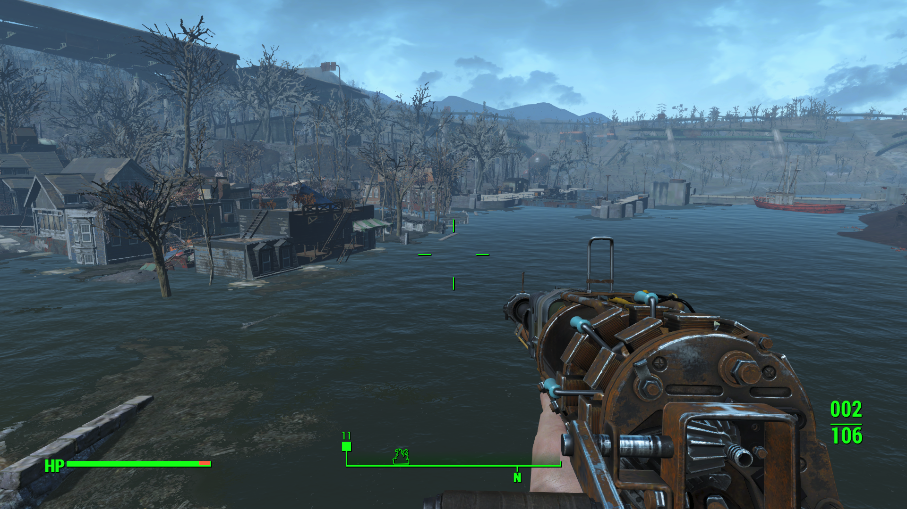
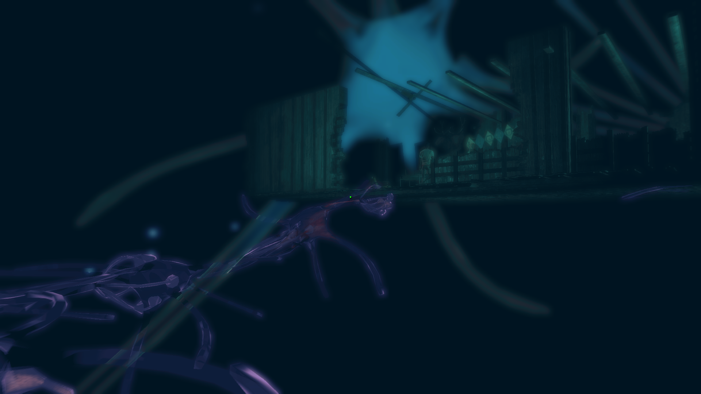
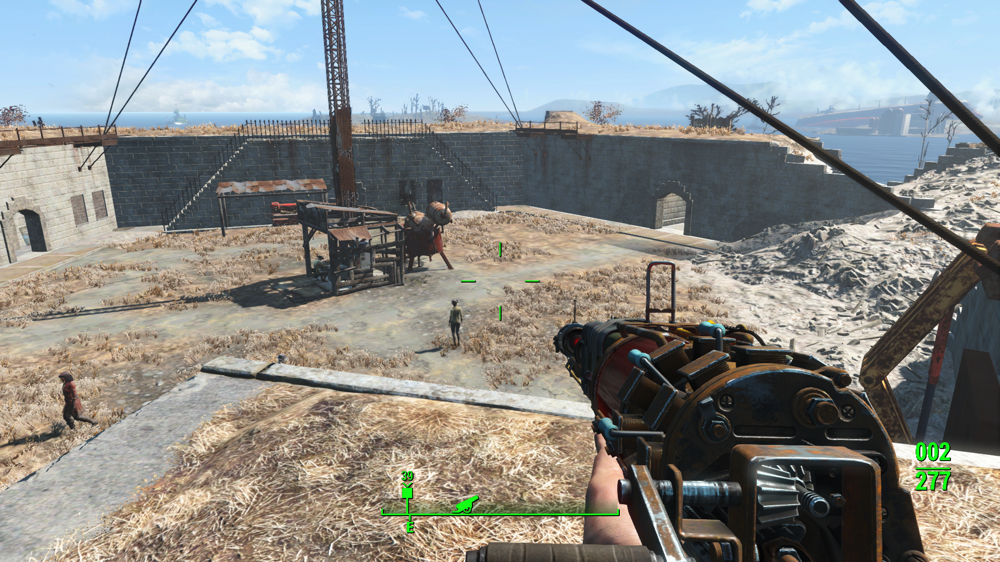
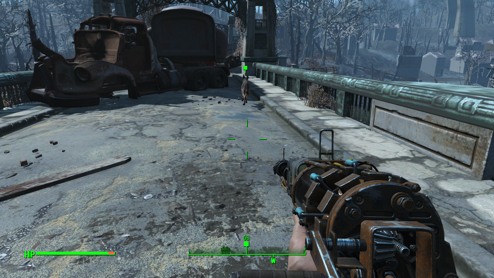

找儿子——《辐射4》：游戏评测日志
一刷，很多姿势没有解锁。
英文名：Fallout 4。
Steam简介：
Bethesda Game Studios, the award-winning creators of Fallout 3 and The Elder Scrolls V: Skyrim, welcome you to the world of Fallout 4 – their most ambitious game ever, and the next generation of open-world gaming.
画面
3D 建模非常的真实，如同给她爱five——GTA5一般。从现代化城市到一片废墟，从普通人物、动物到变种人、变种动物和人造人，各种天气，各种手持兵器、枪支和机甲，还有各种建筑，这些建模都是非常出色的。

^图1: 某海湾旁边

^图2: 某人记忆探索
故事
辐射4的故事背景烘托的很浓厚——2200年的美国。一开始一家人其乐融融，漂亮的妻子、1岁的儿子还有一个智能机器人快乐的生活着。不过好景不长，全国辐射危机即将爆发战争，一家人鉴定契约到某地下庇护所冰冻逃脱战争。然而这个过程并不顺利，人有旦夕祸福，天有不测风云，冰冻其间妻子被枪击中，儿子被劫，被冰冻的自己只有意识却无法挽救。主线剧情也由此揭开——找儿子！不过有一点比较捞，妻子死没死不知道就直接找儿子去了。其间围绕找儿子展开了一系列剧情，其间接触了一些势力，这些势力之间或者合作或者敌对。
^图3: 找到的儿子
游戏性
整体上来看是个大型FPS游戏，其中掺杂着RPG元素、建造基地的沙盒元素、朋友亲密度模拟养成元素等。游戏地图非常大，可以在不同已到达地区之间传送。开局一人一狗，中途也可以和NPC一起刷图，你的言行举止会影响和NPC的亲密度。自己可以对自己的基地进行建造各种设施。使用各种物品有可能受辐射影响造成最大生命值的减少。人物升级可以升级技能，这决定着你是向近战、步枪、狙击、管理等方向发展。

^图4: 基地建造

^图5: 一人一狗
总评
这个游戏难度还是比较大的（本人比较菜），可能是本人比较懒，所以没有体验一百种死法，后期直接开启了GOD模式。这是第一款Steam上入坑的RMB游，所以算是比较有感情吧。